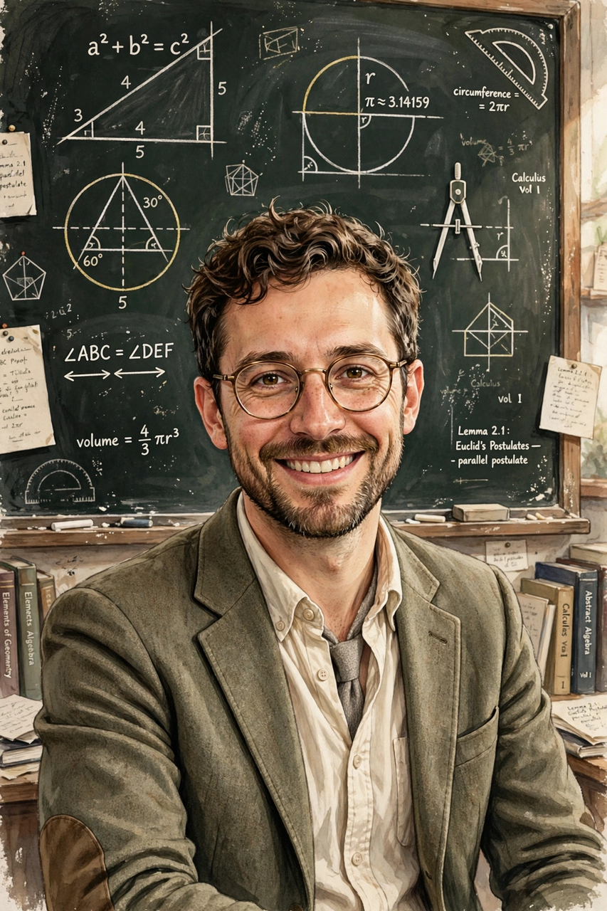

Rudolf von Bitter Rucker (born March 22, 1946) is an American mathematician, computer scientist, science fiction author, and one of the founders of the cyberpunk literary movement. The author of the Ware Tetralogy, he was the first science fiction writer to receive the Philip K. Dick Award, for Software (1982); he won the award again for Wetware (1988). His fiction style, which he calls "transrealism", blends autobiography with surreal extrapolation.

| Born | March 22, 1946, Louisville, Kentucky, U.S. |
|---|---|
| Occupation | Mathematician, computer scientist, author |
| Education | Swarthmore College; Rutgers University (PhD) |
| Notable works | Software (1982); The Fourth Dimension (1984); White Light (1980) |
Rucker was born in Louisville, Kentucky, a descendant of the philosopher G. W. F. Hegel. He earned his bachelor's degree in mathematics from Swarthmore College in 1967 and his PhD from Rutgers University in 1973, with a dissertation on set theory. He taught mathematics at several universities and, from 1986 to 2004, computer science at San José State University, where he worked on cellular automata, artificial life and computer graphics. He also spent time as a software developer in Silicon Valley during the early 1980s.
Rucker's non-fiction includes Geometry, Relativity, and the Fourth Dimension (1977) and the popular The Fourth Dimension: Toward a Geometry of Higher Reality (1984), as well as Infinity and the Mind (1982), a study of set theory and the infinite influenced by his conversations with Kurt Gödel. His novels include White Light (1980), in which a mathematician's consciousness travels into higher dimensions; the Ware Tetralogy (Software, Wetware, Freeware, Realware), about self-reproducing robots on the Moon and their descendants; and Postsingular (2007), about nanotechnology transforming human perception. In 2010 he published the autobiographical Nested Scrolls.